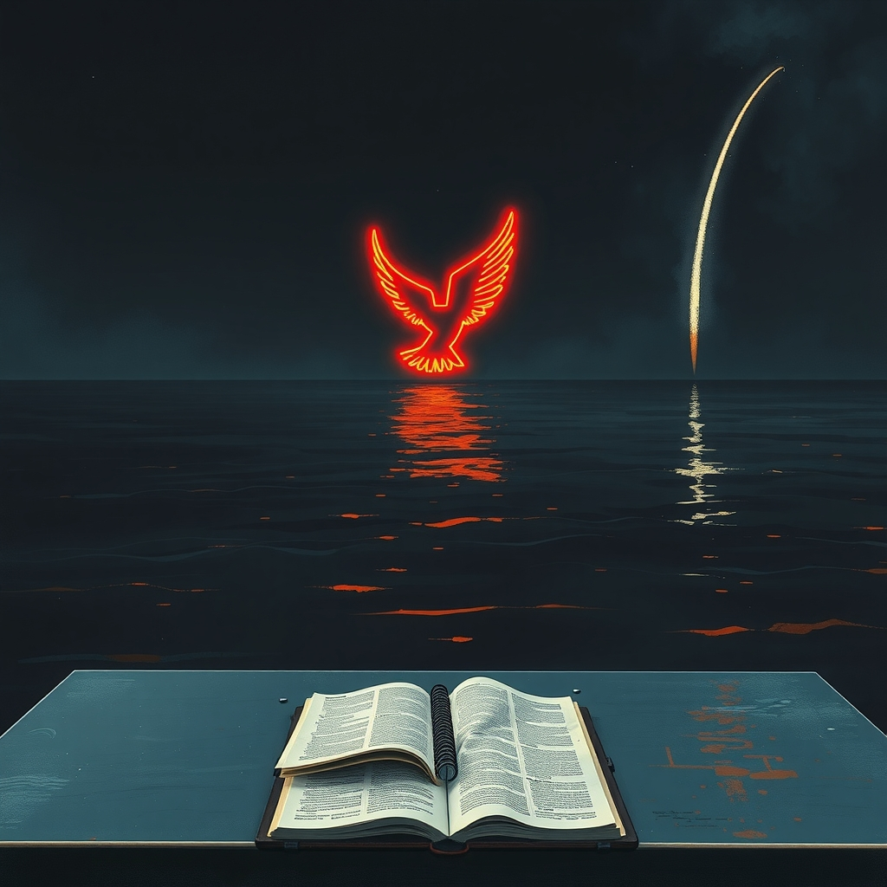
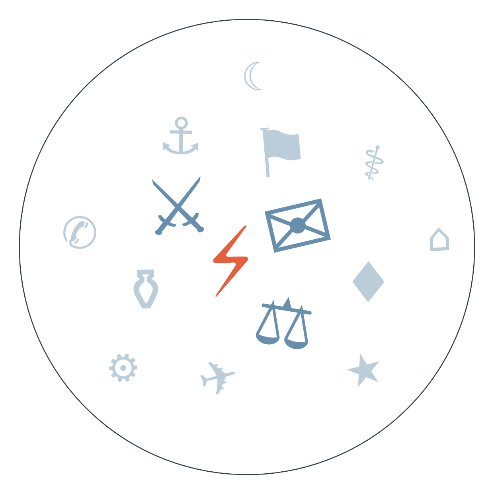

Ранковий бріф · огляд світової преси

Кремль офіційно "привітав" ідею Трампа про енергетичне перемир'я між Росією й Україною — але одразу висунув умову: скасування санкцій. Тим часом обидві армії й далі б'ють по енергооб'єктах одна одної: Росія вдарила по бензоколонках у Києві, Україна — по черговому російському НПЗ. Заява без дій продовжує залишатися заявою (сюжет триває понад тиждень).
Саудівська нафтова криза загострилася: Aramco призупинила завантаження в порту Янбу після зупинки трубопроводу Схід-Захід, а хусити вдруге за тиждень спробували атакувати район Мекки дроном — перехоплено. Ціна на нафту вже реагує різким стрибком, і від того, чи запрацює трубопровід "протягом днів", як обіцяє Вашингтон, залежить, чи побачимо ми паливну кризу глобально чи локальну паніку (сюжет ескалації в Ормузі й Червоному морі триває понад два тижні).
Зеленський увечері звільнив Руслана Кравченка з посади генерального прокурора — після того як Рада погодила відставку на тлі затяжного протистояння генпрокурора з НАБУ та САП. Це перше за довгий час пряме втручання президента у справу, яку правозахисники й партнери роками називають лакмусовим папірцем реформи прокуратури, тож реакція західних столиць варта уваги найближчими днями.
США висунули звинувачення п'ятьом особам у причетності до мережі, яку, за версією американської прокуратури, курирувала російська розвідка з метою стеження й убивств людей, пов'язаних із підтримкою України, у США та Європі. Якщо звинувачення витримають суд, це вперше документально підтвердить те, про що союзники Києва говорили роками лише натяками.

Сюжет 1: Енергетичне "перемир'я", якого ніхто не бачив
Замовчують: жодне з видань не ставить прямого питання, чи Кремль взагалі має намір щось зупиняти, а не просто виграти час перед новим раундом санкцій.
Чому розходяться: боснійське видання орієнтоване на нейтральний виклад офіційних заяв без політичного забарвлення; європейський EUobserver зацікавлений показати активність і успіхи Києва перед аудиторією, яка ухвалює рішення про підтримку; чеське видання традиційно критичне до нерішучості Вашингтона і схильне підкреслювати роздратування США; швейцарське видання дотримується стриманого репортажного стилю, характерного для франкомовної преси, і уникає інтерпретацій.
Сюжет 2: Дрон над Литвою і ракетниці біля Данії (радше спектр обережності, ніж класичний розкол)
Замовчують: жодне видання не згадує, скільки таких інцидентів було лише за останній тиждень і чи є в НАТО формула реагування, окрім скликання нарад.
Чому розходяться: тут немає протилежних таборів — усі видання визнають причетність Росії ймовірною, розбіжність лише у ступені обережності формулювань. Французьке видання тримає нейтральний тон, бо працює на широку європейську аудиторію без потреби загострювати; вигнанське російське видання зацікавлене показати конфронтаційність Кремля власним читачам, які і так налаштовані критично; турецьке державне видання уникає прямих звинувачень Росії з огляду на власну багатовекторну політику; британська громадська мовна корпорація дотримується стандарту атрибуції звинувачень; американське ділове видання вибудовує ширшу стратегічну картину для інвесторів і політиків.
Хусити взяли під контроль Баб-ель-Мандеб → регіональна напруга навколо Ормузької протоки посилюється → сьогодні Aramco зупинила завантаження в Янбу після удару по трубопроводу, а хусити вдруге атакували район Мекки → веде до перевірки, чи витримає світовий ринок нафти ще один тиждень невизначеності, поки Вашингтон обіцяє відновлення "протягом днів".
Раніше цього тижня Трамп публічно тиснув на Київ, вимагаючи зупинити удари по нафтопереробці Росії → за кілька днів Трамп вже пише про нібито досягнуту домовленість про паузу по енергетиці → сьогодні Кремль підтримує ідею словами, вимагаючи скасування санкцій, а бойові дії по енергооб'єктах з обох боків не припиняються → веде до питання, чи наступний раунд санкцій ЄС 22 вересня стане реальним важелем тиску, чи повторить долю попередніх заяв.
Серія інцидентів на східному фланзі тривала тижнями → сьогодні триває резонанс від збитого над Литвою дрона, а російський фрегат випускає сигнальні ракети в бік данського гелікоптера → веде до питання, чи стане це приводом для нового пакета санкцій, чи залишиться черговим "інцидентом без відповідальних".
Нафта: після зупинки трубопроводу Схід-Захід і призупинення завантажень у Янбу Brent підскочив більш ніж на 3 долари за барель.
ФРС: дохідність 10-річних облігацій США вперше з 2023 року перевищила 5% напередодні рішення FOMC — ринок закладає радше жорсткість, ніж пом'якшення політики.
Аргентина: уряд визнав, що не виконає фіскальну ціль 2026 року, розраховуючи переконати місію МВФ, яка прибуває 21 вересня.
Канада: прем'єр Карні шукає "унікальний альянс" з ЄС на тлі торговельної війни зі США, хоча повне членство юридично неможливе.
Поки якісна преса стримано пише про закриття Кеннеді-центру й перегони санкцій, Bild розганяє гороскопи на тиждень і вбивцю-медсестру Люсі Летбі — типова паралельна реальність німецького таблоїда.
Польський Fakt уже днями тримає в топі зникнення жінки на ім'я Емілія, повністю ігноруючи міжнародну повістку — показовий приклад, як таблоїд живе власним циклом уваги.
Швейцарський Blick розганяє тему "шоку для VW" через китайські електромобілі в топ-десятці продажів — тема реальна, але подана в тоні паніки, якого немає в діловій пресі.
Звільнення Кравченка (див. ГОЛОВНЕ) додає новий шар: це перше за роки пряме втручання президента у корпус антикорупційних органів, і головне питання тепер — чи Захід прочитає це як очищення, чи як тиск на незалежність слідства напередодні чергового траншу допомоги.
Удари по енергооб'єктах тривають з обох боків (див. ГОЛОВНЕ) — і саме від цього обміну ударами напередодні зими залежить, наскільки стійкою залишиться українська енергосистема до холодів.
Звинувачення США проти мережі стеження й убивств (див. ГОЛОВНЕ) для українського виміру означає одне: якщо вирок підтвердить провину, це стане першим документальним підтвердженням загроз, про які українська діаспора попереджала роками.
Підтверджене розміщення зброї США на орбіті лишилося майже непоміченим за межами кількох видань — про реакцію Пекіна й Москви пише лише італійська ділова преса, тоді як офіційні речники Пентагону, Кремля та Пекіна мовчать, а більшість світових медіа зайняті Ормузом та Іраном.
Спалах кору у США — вже четверта смерть у Пенсільванії — потрапив лише в аргентинське видання Infobae; американська преса з сьогоднішнього дайджесту цю смерть не згадує взагалі, хоча йдеться про повністю невакцинованого пацієнта — тема незручна для внутрішньої дискусії про вакцинацію.
Річниця загибелі Махси Аміні супроводжується, за даними правозахисної організації, повною мілітаризацією Курдистану — про це пише лише опозиційне іранське видання у вигнанні, тоді як державні іранські медіа сьогодні про річницю не згадують жодним рядком.
Середня впевненість: трубопровід Схід-Захід у Саудівській Аравії може відновити роботу протягом кількох днів, що знизить тиск на світові ціни нафти. Ґрунтується на одній заяві міністра енергетики США, наведеній профільним нафтовим виданням.
Висока впевненість: серія гібридних інцидентів на кордонах НАТО (дрони, кораблі) продовжиться найближчими тижнями. Ґрунтується на паттерні з п'яти джерел різних країн і повторюваності випадків із серпня.
Низька впевненість: рішення FOMC цього тижня може виявитися жорсткішим за очікування ринку через зростання дохідності облігацій. Ґрунтується на одному ринковому індикаторі й попередньому перенесенні рішення.
Наші:
Трубопровід Схід-Захід у Саудівській Аравії повністю відновить роботу до 30.09.2026
Данія або НАТО оголосять додаткові заходи безпеки у відповідь на інцидент з російським фрегатом до 30.09.2026
Росія або Китай дадуть офіційну публічну відповідь на підтвердження США щодо розміщення зброї на орбіті до 30.09.2026
Кажуть інші: гідних передбачень із чіткою датою у сьогоднішньому дайджесті менше двох. Наведу одне: міністр енергетики США Кріс Райт заявив, що саудівський трубопровід може повернутися в роботу "протягом днів" — горизонт не уточнено точною датою.
Далі: ~20 вересня — очікуване формування коаліції в Саксонії-Ангальт після виборів. 25 вересня — орієнтовний горизонт відновлення переговорів Ізраїль-Ліван після перенесення раунду в Римі. 25 жовтня — позачергові парламентські вибори в Сербії, оголошені Вучичем. Горизонт до кінця вересня — можливе рішення FOMC щодо ставки, перенесене з попереднього засідання.
Базова лінія у прогнозах. Відсоток «базово» — це ймовірність події за інерцією, якщо ніхто нічого не робитиме й нічого не зміниться. Друге число — наша впевненість. Прогноз має сенс лише тоді, коли ці числа розходяться: збіг означає, що ми просто описали поточний стан.
Відсотки в карті уваги. Частка країни в денному обсязі зібраних матеріалів. Не показник важливості події, а показник того, скільки місця країна зайняла в новинному потоці за добу. Різкий стрибок частки зазвичай означає, що в країні щось відбувається.
Стрічки, які не відповіли. Не відповіли: Zerkalo, Guancha, Yicai, Al Arabiya, Dzerkalo Tyzhnia, Milenio.